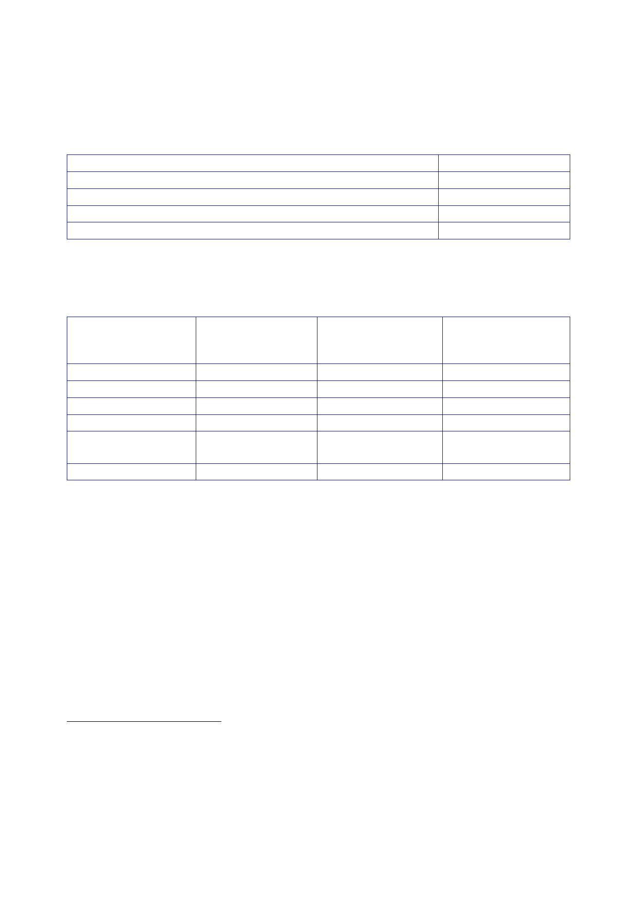

6.3 |
Military equipment (pre-conflict)
478.
A report by
the House of Commons Defence Committee produced a
different
categorisation
of UORs:
Category of
UOR
UORs that
hastened existing programme
UORs that
introduced new capabilities not previously programmed
UORs that
topped up holdings of items already on MOD’s inventory
UORs
modifying existing equipment/infrastructure
33
20
30
17
479.
The MOD’s
assessment of UOR availability for the start of operations
was:
Environment
Maritime
Land
Air
Joint
Joint
Communications
Infrastructure
(J6)
Overall
% of UORs
delivered
80%
84%
74%
45%
% of UORs
requested
by this
component
70%
79%
57%
45%
% of UORs
considered
effective/highly
effective
100%
85%
95%
76%
75%
71%
75%
65%
86%
88%
480.
Stocks for
desert clothing were insufficient to support a large
scale
deployment
in the time available.
481.
In response to
concerns raised with Adm Boyce during his visit to theatre,
the
DLO
provided advice on desert combat clothing on
14 April.236
It stated
there was “an
acknowledged
maximum shortfall in theatre of 18,300 suits and 12,500 boots
amongst
the Land
component, as of 13 Apr 03”.
482.
The DLO
advised that the shortfall would reduce to 3,275 suits for 1 (UK)
Div units
within the
next 72 hours as clothing and boots were pushed forward within
theatre and
further
deliveries were received. The remaining items for the Division
would be delivered
by
22 April, and the Joint Force Logistic Component units by
28 April.
232
Third
Report of the House of Commons Defence Committee, Session
2003-04, Lessons of
Iraq,
HC 57-1,
para 170.
233
Minute VCDS
to PS/Minister(DP), 27 May 2003, ‘Iraq – Operation TELIC
Equipment
Performance/UORs’.
234
Delivered
into theatre by 15 March.
235
On time is
defined as the dates units crossed the start line for operations
(19/20 March).
236
Minute D
Ops DLO to PSO/CDS, 14 April 2003, ‘Op TELIC – Desert Combat
Clothing’.
77